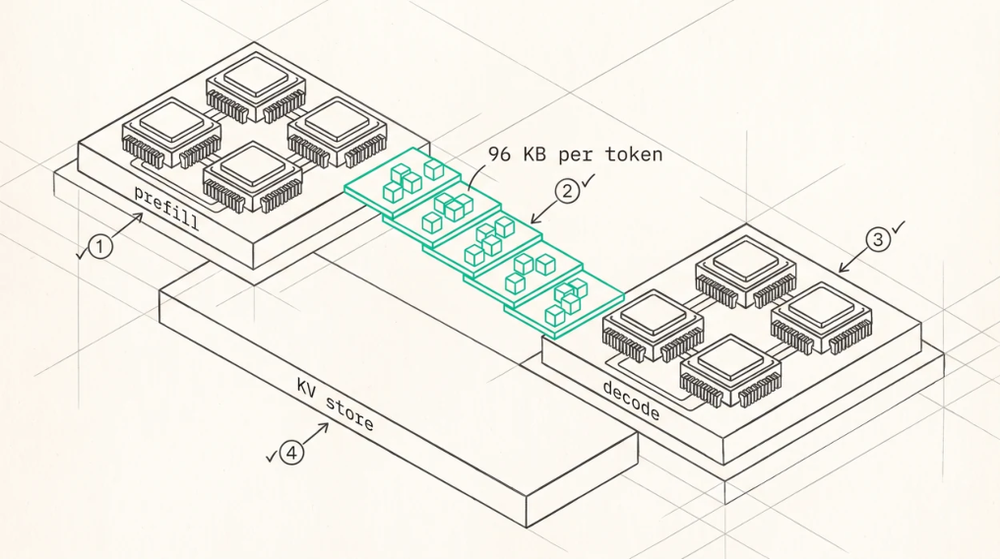

Disaggregated Serving
The observation
Prefill and decode have opposite resource profiles, which Part IV has been working around rather than resolving. Prefill is compute-bound with high arithmetic intensity, benefits from large batches, and is measured by TTFT. Decode is memory-bandwidth-bound with low arithmetic intensity, benefits from many concurrent sequences, and is measured by TPOT.
Running both on the same GPU means each interferes with the other’s optimal configuration. Chunked prefill (Chapter 18) mitigates the interference and can’t resolve the deeper conflict, because the two phases want different batch sizes, different parallelism strategies, and increasingly different hardware.
Disaggregated serving takes the logical step, separate pools each configured for its phase, with the KV cache transferred between them.
The architecture

O
1The prefill pool runs large batches on compute-optimised parts with no decode work interrupting it.O
2KV moves layer by layer as it is produced rather than all at once, which hides most of the transfer under the prefill that is still running. That is the difference between the arithmetic being a showstopper and being a design parameter.O
3The decode pool runs many concurrent sequences on bandwidth-optimised parts, and the two pools get sized independently, which is the operational win.O
4Underneath, a cache tier built from memory and SSD already in the cluster. Treating KV as infrastructure rather than as a worker’s private detail is what makes prefix reuse a cluster-wide property.
The prefill pool processes prompts in large batches on high-FLOPS GPUs with parallelism configured for throughput and no decode work interrupting it. The KV transfer moves computed blocks to the decode node, layer by layer as they’re produced rather than all at once, which hides most of the transfer under the remaining prefill compute. And the decode pool generates tokens on high-bandwidth GPUs with many concurrent sequences and no prefill interruption.
The operational win is that the pools get sized independently. A workload with long prompts and short outputs needs more prefill capacity, one with short prompts and long outputs needs more decode capacity, and a monolithic deployment has to provision for both in every GPU.
The transfer cost, computed honestly
It is tempting to reach for a round number here, something like “a long context is a few hundred megabytes, so a fast link moves it in a millisecond”. That estimate is wrong by orders of magnitude, and doing the arithmetic properly changes the conclusion rather than refining it.
For Qwen3-235B, 94 layers with 4 KV heads of dimension 128 in FP8, KV is 1,024 bytes per token per layer, so 96 KB per token for the whole model.
| CONTEXT | KV SIZE (FP8) | TRANSFER AT 400 GB/S (50 GB/S) | AT 450 GB/S NVLINK |
|---|---|---|---|
| 1K tokens | 96 MB | 1.9 ms | 0.21 ms |
| 8K tokens | 770 MB | 15 ms | 1.7 ms |
| 128K tokens | 12.3 GB | 246 ms | 27 ms |
| 1M tokens | 96 GB | 1.9 s | 214 ms |
The NVLink column is 450 GB/s rather than the 900 GB/s usually quoted for H100, because 900 is the aggregate of both directions and a KV transfer runs one way.
Two conclusions follow. The first is that the transfer never dominates on its own terms, because it scales the same way the prefill that produced it does. The correct comparison is always transfer time against recompute time, so if prefill of 128K tokens takes 2 s and moving its KV takes 246 ms, transfer wins comfortably, and it keeps winning at a million tokens where prefill runs into tens of seconds and the transfer is under two.
The second is that the absolute numbers still bite. Two seconds of KV moving over the network is two seconds of TTFT you have to hide, and it is a large multiple of the decode step it is feeding. On a slow link, or with a short prompt where prefill was cheap anyway, the trade stops being obvious.
Which is why layer-by-layer streaming matters so much. Transferring layer i ’s KV while layer i+1 prefills hides nearly all of the transfer, turning a serial cost into an overlapped one, and that’s the difference between the table above being a showstopper and being a design parameter.
Mooncake
Mooncake, the serving platform behind Kimi, is the production proof point, and its central design choice is worth stating precisely. It’s KV-cache-centric , meaning the KV cache isn’t an internal detail of a GPU
worker, it’s a first-class disaggregated resource with its own storage tier, built from the CPU memory and DRAM and SSD capacity already sitting in the cluster, addressed over RDMA.
That inversion, cache as infrastructure rather than as cache, enables prefix reuse across the entire cluster instead of within one worker, which on prompt-heavy production traffic is worth more than any single-node optimisation. Mooncake also implements early rejection under overload, predicting whether a request can meet its SLO before committing prefill work to it.
DistServe and Splitwise
DistServe (Zhong et al., OSDI 2024) is the academic foundation, showing that prefill and decode have different optimal parallelism configurations, that co-location forces a compromise on both, and that disaggregation plus per-phase configuration substantially improves the number of requests served within SLO.
Splitwise (Patel et al., ISCA 2024) adds the heterogeneity argument. Because the phases have different bottlenecks they can run on different GPU generations , older and cheaper high-FLOPS parts for prefill and high-bandwidth parts for decode, improving cost and power efficiency beyond what homogeneous disaggregation gives.
The engineering reality
Disaggregation has become a standard deployment mode with standard components. A KV transfer layer with a pluggable backend, RDMA verbs or NVLink or GPUDirect, and an engine-facing connector API so prefill and decode workers can be different processes or different engines. A router that’s prefixaware, since routing a request to the prefill worker whose cache already holds its prefix is worth more than load balancing. A KV store tier below GPU memory holding prefixes evicted from VRAM. And orchestration that scales the two pools independently against their own SLOs.
The costs are equally real. Two pools to operate, a transfer path that can fail independently of both, a router that becomes a critical dependency, and a much harder capacity-planning problem. Below a certain scale none of that is worth it, because the interference disaggregation removes is smaller than the complexity it adds.
When it helps
Disaggregation helps when prompt and output lengths vary widely, when TTFT and TPOT SLOs are both tight, when prefix sharing is high enough to justify a cluster-wide cache, when heterogeneous hardware is available, and when the deployment is large enough for two pools to be sized efficiently.
It doesn’t help when the workload is homogeneous so interference is minimal, when the deployment is small enough that fragmentation exceeds the gains, when the link between the pools is slow enough that KV transfer stops being cheap against recompute, or when your operational complexity budget is already spent.
Key Concept
Disaggregation separates prefill and decode into independently configured pools, and the KV transfer between them is the engineering problem. Compute the transfer honestly, since Qwen3-235B in FP8 is 96 KB per token, making 128K context 12.3 GB and 1M context 96 GB, so about two seconds over a 400 Gb/ s network and a fifth of a second over one direction of NVLink. Stream KV layer by layer to hide it under remaining prefill. And Mooncake’s real lesson is architectural, treat the KV cache as cluster infrastructure with its own storage tier and prefix reuse becomes a cluster-wide property.
Exercises
Recompute the transfer table for a Llama-3-70B-shaped model, 80 layers, 8 KV heads, dimension 128, in FP8 and FP16. At which context length does transfer over 400 Gb/s exceed prefill time at 20,000 tokens/s?
Explain how layer-by-layer streaming hides transfer latency, and derive the condition under which it’s fully hidden.
Design a prefix-aware router for a disaggregated deployment with 16 prefill and 32 decode workers. What state does it need, and what happens when that state is stale?
Build: simulate a disaggregated system against a monolithic one on a workload with bimodal prompt lengths. Report goodput for both at a fixed SLO pair and find the traffic mix where they cross over.